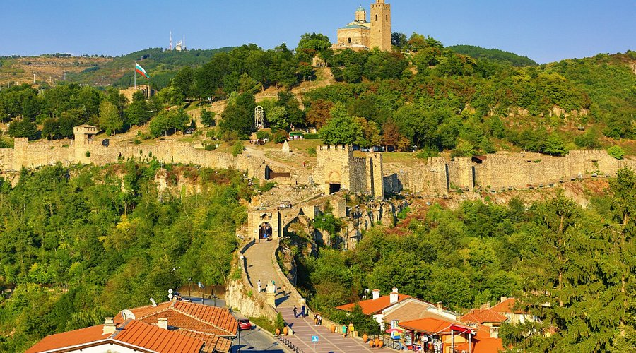
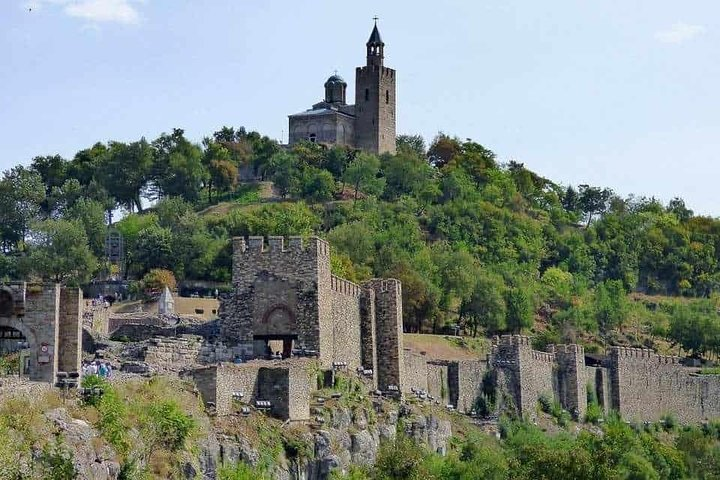
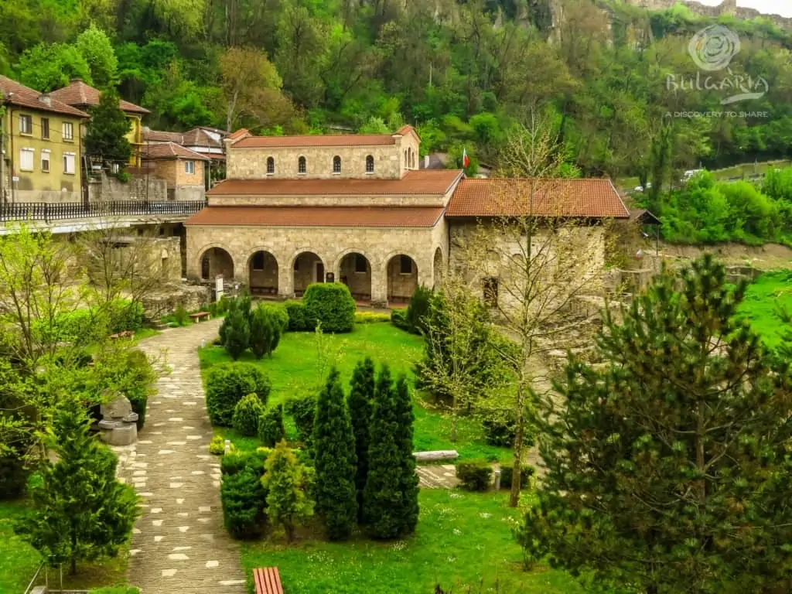
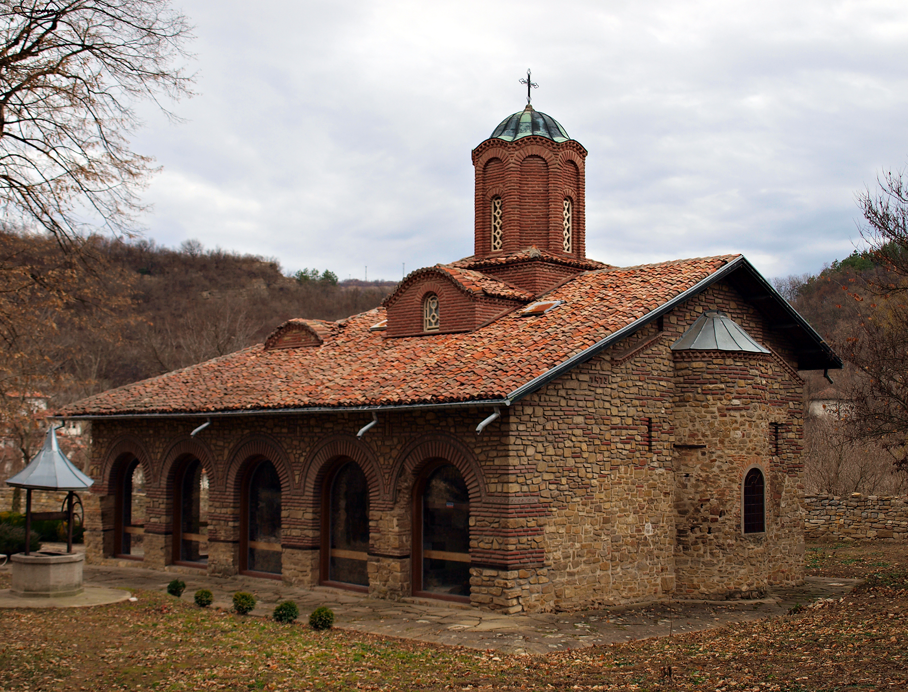
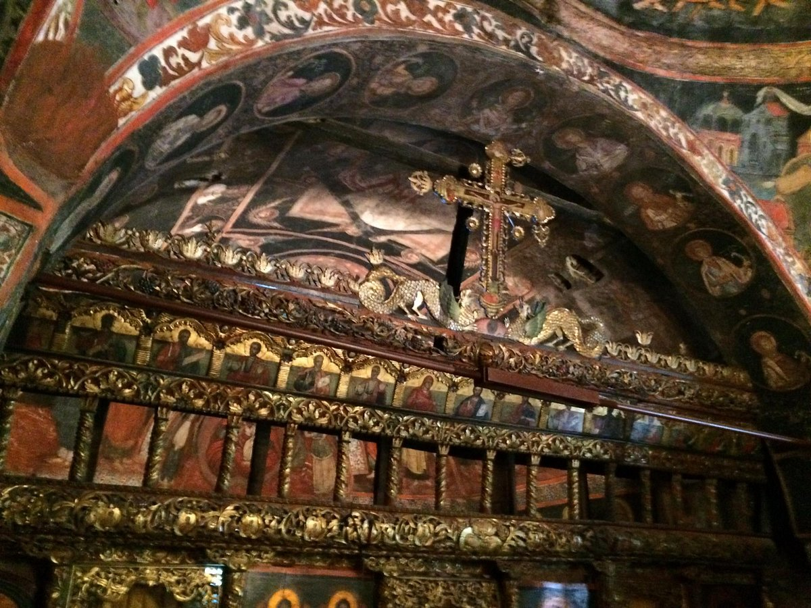

Основни забележителности
Крепост Царевец
Крепостта Царевец е една от най-впечатляващите крепости в България, построена през XIII век. Разположена на живописния нос, крепостта предлага гробещи видове към реката Янтра. Посетители могат да видят развалините на дворци, храмове и крепостни стени.
Крепост Преображенски
Втората голяма крепост, намираща се на противоположния бряг на реката Янтра, предлага алтернативна гледна точка към Велико Търново. Тя е по-малка от Царевец, но не по-малко историческа.
Крепост 40-те мъченици
Трета крепост на триумвирата, която хвърли светлина върху военната архитектура на Средновековната България. От върха й има отличен преглед на долините на Янтра и историческия град.
Церква Св. Св. Петър и Павел
Един от най-красивите съборни храмове в Велико Търново, датиращ от периода на Второ българско царство. Архитектурата е типична за средновековната българска стил.
Триаръвска старинна улица
Традиционна улица с аутентични магазини, ремесленски работилници и традиционни кьошета. Посетители могат да видят местните занаятчии работещи с глина, плетене и дърво.
Музей "Второ българско царство"
Музейът представя артефакти и експонати от периода на Второ българско царство. Тук могат да се видят църковни съсъди, керамика, монети и други релики от този период.